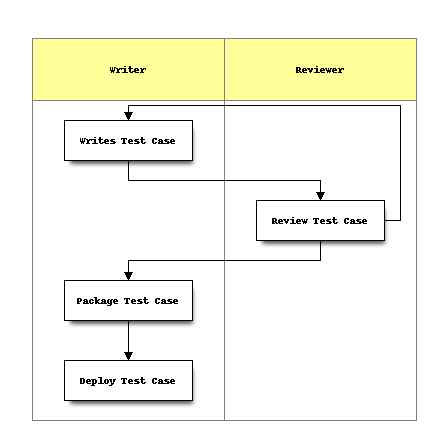
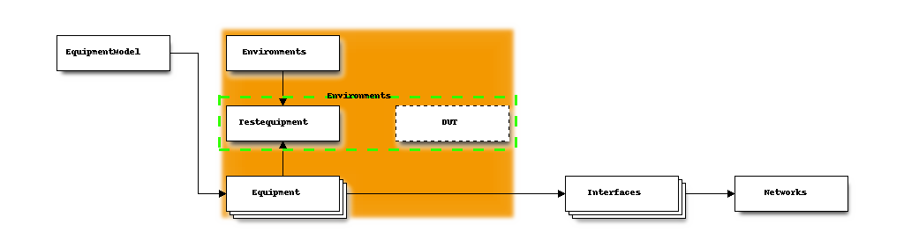
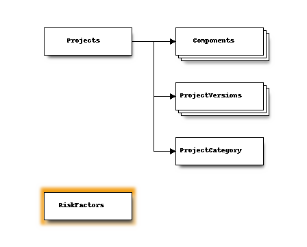

Pycopia 3 Update
Motivation
- Refresh to newer Python 3 language.
- Leverage newer third-party modules.
- Original design somewhat ad-hoc:
- Concepts added over time.
- Some features never actually used.
- Had to extend Python in some areas.
- Python now has more and better standard modules.
- Can now use more standard modules.
- More maintainable.
- Opportunity for cleaning up the code
(As with Python 3 itself)
Python 3
- Python 3 is the future of Python:
- Better text/unicode and data separation.
- More built-in language features
- Better memory management.
- Function annotations, non-local variables.
- yield from, Exception chaining, print function, enums
- Unified IO model.
- Standardized asynchronous IO.
- Active development.
Major QA Framework Features
- Intended to support the entire gamut of QA activities.
Collection of modules to support writing test cases.
Collection of modules to support writing tools.
Means to run test cases in flexible ways.
Means to report test case results that are accurate.
Means to manage test cases.
- Test coverage
- Maintenance and obsolecense.
Manage lab assets.
Features (cont)
- Easy to write test cases; low overhead, limited boilerplate.
- Accurate, reliable results.
- No false positives.
- No false negatives.
- PASSED really means passed, FAIL really means fail.
- Dynamic test suite construction (adjusts to configuration).
- Flexible test invocation: automated or manual.
- Mix automated and manual tests.
- Automated test permutations.
- Global, per-test, and per-user configuration.
Features (cont)
- Abstract runtime environment.
- Test cases are portable across testbeds.
- Test cases are are reusable in different suites.
- General purpose controllers to interact with devices from tests, or tools.
- Test management and reporting.
- Manage test coverage and risk
- Product quality dashboards
Design Philosophy
- Modular, using Python package hierarchy.
- Re-usable test cases.
- Use only abstract environment objects, not specific hardware.
- Environment objects hold necessary data in an intuitive way.
- Environment objects may be controlled via controllers, dynamically
constructed on demand by the test.
- Small, single-purpose test case.
- Should be composable for different purposes.
- Dynamic suite constructions, run time selection of tests.
Design Philosophy
Test plan prose is also kept inside the test case code itself. It is the only
test case documentation. Better chance of being accurate.
End result are test cases that are small, simple, and easy to read and
understand.
Manual tests should also benefit from it, streamlining manual operations.
Test Outcomes
A test framework is also software, and may also have bugs.
Possible test run outcomes
| Framework |
Product |
|---|
| Pass |
Pass |
| Pass |
Fail |
| Fail |
Unknown |
Framework should not report a product failure if the test actually failed.
Test Framework style
To that end...
- Python: A modern, dynamic, object-oriented scripting language.
- Primarily an object-oriented framework design. Write test cases with
inheritance. However, may also write and run simple script modules.
- Leverage Python package hierarchy to organize test cases.
- Leverage Python code introspection to find, inspect and report on test
cases.
Test Framework style
- Leverage Python exception handling to get accurate results.
- Bail early on errors, don't continue if it doesn't make sense.
- Automatic, doesn't depend on explicit error checking by test writer.
- Package namespace, testcases, defined for all test cases. Sets of test
cases may be deployed in modular packages.
Framework Test Results
- PASSED: test passed (criteria was met). A test case should
positively determine this, with explicit verification.
- FAILED: test failed (criteria was not met), but the suite can
continue.
- INCOMPLETE: test could not complete, and the pass/fail
criteria could not be determined. but the suite may continue. May happen with
the test itself fails for some reason.
- ABORTED: test could not complete, and the suite cannot
continue.
- EXPECTED_FAIL: test is failing due to a bug, so is
already known to fail. New runs shouldn't report as new failure.
Structure
Framework object model.
- Test cases (TestCase object) implement tests. One subclass per test case.
- Test suites (TestSuite object) contains a sequence of TestCase and
handles running them in order, and also prerequisite checking.
- Use cases (UseCase object) construct suites at run time. They may inspect
the runtime configuration and make adjustments to the suite at that time. Or,
they may just hard-code a set of test cases.
Structure
- A Python module may also act as a use case.
- A TestSuite is polymorphic with a test case, and may be nested. Thus a
hierarchy of test cases may also be built up.
Note
"UseCases"
"TestSuites"
"TestCases"
"TestResults"
"TestResultsData"
"TestJobs"
Additional Objects
Support objects include the TestRunner.
- It manages the environment construct and report instantiation.
- Runs the top-level test object.
- Takes input from the user that invokes the test (from command line
arguments, for example) and provides them in the global configuration.
This way the user can control what tests are run without having to edit any
code or configuration files.
Can select tests from a menu for ad-hoc testing.
Additional Objects
User interface objects can take input from the user at run time, for manual
tests.
Report objects produce the test run output. May send to console, save to file,
or emailed. There is also a database table for test result records.
Test Case Workflow
System supports development, test, review, and deploy workflow. Develop tests
on a development host, package, then deploy on production host.
This is optional. A broader code review process may also be used.

But wait, there's more!
- Scalable deployment (single user to multi-user).
- Leverage more Python features and other open-source modules.
- New design makes it easier to add functionality.
- Easier to manage test cases and equipment.
- Test runs emit signals when run.
- Decouples test output from test cases.
- Extend reporting with custom listeners.
- Based on blinker third-party module.
Database
QA Framework contains integral database.
Provides complete QA model.
- May be configured to use sqlite (small installations), or postgresql.
New ORM layer:
- Based on peewee: single module, smaller and simpler.
- Models can be used directly by advanced developers.
Contains
- Lab equipment data
- Test case data
- Configuration
- Test bed (environment) associations and roles.
Benefits
- Persistent configuration
- Enables complex association modelling with foriegn keys.
- Managable by numerous user interfaces.
- Scalable - leverage databases's client-server model.
- Central, single source of "truth".
- Central knowledge base (no private spreadsheets)
- All Equipment information
- Generate various reports (test coverage to lab assets).
Equipment and Environments
Lab equipment and environment grouping.
All knowledge about all lab equipment is stored.
Interconnections are also modelled.
Test cases may use this information to construct configurations.
Users may use this information to understand topology and test scenarios.
Extensible attribute system.
Environments
- Equipment can take on one or more roles in one or more environments.
- Equipment can be grouped into an environment.
- Test runs target a particular environment.
- Special role is DUT, the device under test.

Manual Testing
Supports more efficient manual testing. Resource reservation.
Answer questions quickly, such as:
- What is the IP address of a device?
- What is the IP address of the console server?
- How do I log in?
- Where is it?
- Who do I contact when it breaks or needs updates?
- Who do I contact to use it?
Manual test case code may also present info to the user from here.
Lab maintenace
- Faster and more effective equipment management
- Warranty info
- Maintenance contracts
- Repair status
- RMA contact
Test Cases
Database holds information about test cases as well. Syncronized with code
base. Also provides a means to construct static test suites using an
interactive user interface.
- UseCase is just used to document the various use cases, for reporting.
- TestSuites are containers of TestCases. May be used for static suites.
- TestCases reference specs, procedures, and test results, for reporting.
Automated Automation
- A TestJobs collects a suite, environment, and configuration together for
repeatable runs.
- A Schedule records schedules of TestJobs that is used to configure
cron to run the jobs.
Configuration
General, persistent configuration items.
- Custom attributes may be attached to Equipment and Environments.
- Global configuration in a hierarchical structure.
Projects
Some support for project management and project information.
- Primarily used for managing test case coverage.
- What functional areas are tested? Which are lacking?
- Associate test cases with functional areas.
- Assign risk factors to help prioritize test production.

Example Test
Here is how you would write a test case.
from pycopia.QA import core
class MyTestCase(core.TestCase):
"""
Purpose
-------
Documentation, test plan is contained in the code.
...
"""
def execute(self):
result = do_something_here()
if result:
self.passed("The test meets the criteria")
else:
self.failed("The test did NOT meets the criteria")
Test Module
"""
Simple implementations may be as simple as this.
"""
def execute():
print("You got me")
info("same place")
assertTrue(True)
assertFalse(False)
passed("Test passed")
And that's it.
Various User Interfaces
The tests and runner are decoupled from the console and user interface.
- Command line tools
- Terminal based front-end
- Web UI front end.
- Run automated job (e.g. from cron).
Questions?
Any questions?